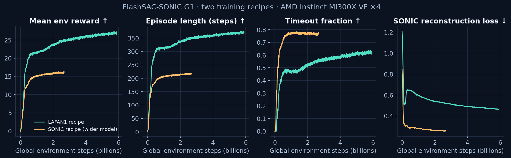
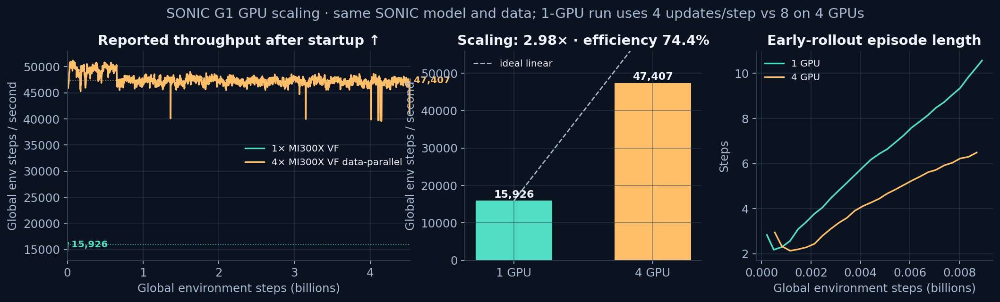
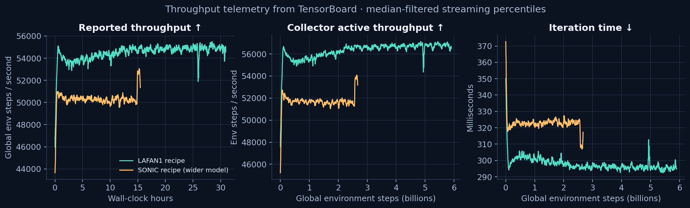
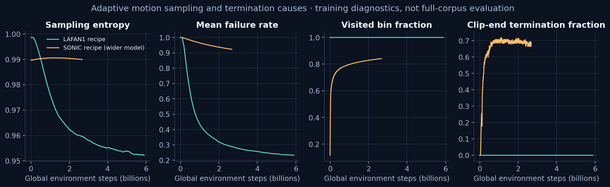
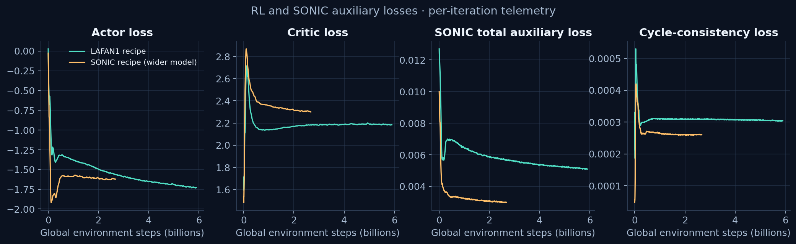
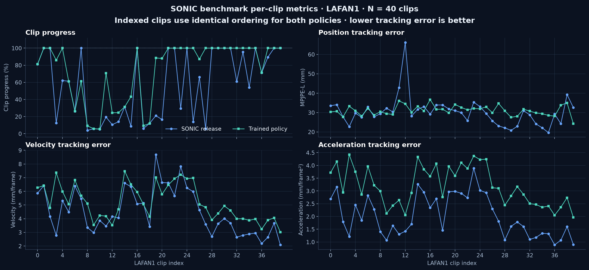
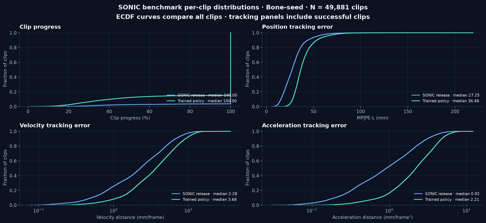

OFF-POLICY SONIC ON AMD INSTINCT MI300X · 2026.09.21AMD INSTINCT MI300X 上的 OFF-POLICY SONIC · 2026.09.21
Training a SONIC whole-body
motion policy on four MI300X GPUs.四卡 MI300X 上，
训练 SONIC 全身运动策略。
On AMD Instinct MI300X VFs we train SONIC-style G1 whole-body motion tracking policies with FlashSAC: under the same algorithm skeleton, two long-horizon runs with the LAFAN1 recipe and the SONIC recipe, plus a new 1-GPU vs 4-GPU scaling comparison, benchmarked against the official SONIC release checkpoint with 49,921 evaluation trials. Training diagnostics, sampling dynamics, loss curves, and per-clip video evidence ship with this page.在 AMD Instinct MI300X VF 上用 FlashSAC 训练 SONIC 风格的 G1 全身运动跟踪策略：同一算法骨架下完成 LAFAN1 配方与 SONIC 配方两组长程训练，新增单卡与四卡 GPU scaling 对照，并用 49,921 条评测 trial 与官方 SONIC release checkpoint 对比。训练诊断、采样动态、损失曲线与逐段视频证据随包发布。
4× MI300X data parallel · 47,407 env steps/s4× MI300X 数据并行 · 47,407 env steps/s 49,921 evaluation trials vs official release49,921 条评测 trial 对比官方 release MuJoCo × Motrix dual-backend validationMuJoCo × Motrix 双后端验证13.1B steps131 亿步Cumulative env steps across four runs · longest single run 5.898B steps四组训练累计环境步数 · 最长单次 58.98 亿步
47,4074-GPU median throughput in env steps/s · 1 → 4 GPU speedup 2.98×4 卡中位吞吐 env steps/s · 1 → 4 卡加速 2.98×
49,921Evaluation trials per model · LAFAN1 40 + bone-seed 49,881每模型评测 trial 数 · LAFAN1 40 + bone-seed 49,881
0.74 mmMean body-error difference between MuJoCo and Motrix over six paired clipsMuJoCo 与 Motrix 六段对照平均身体误差差值
Training: both recipes keep converging训练效果：两种配方均持续收敛
The same FlashSAC algorithm was trained long-horizon on two data recipes. The LAFAN1 recipe ran 5.898B steps over 30.9 hours; the SONIC recipe (wider model + SONIC data) ran 2.670B steps over 15.5 hours. Reward, episode length, and timeout fraction keep rising on both, and the SONIC reconstruction loss decreases steadily, with no sign of divergence or collapse.同一 FlashSAC 算法在两组数据配方上长程训练。LAFAN1 配方训练 58.98 亿步、30.9 小时；SONIC 配方（更宽模型 + SONIC 数据）训练 26.70 亿步、15.5 小时。两者奖励、episode 长度与 timeout 占比持续抬升，SONIC 重建损失稳定下降，无发散或崩溃迹象。

| Run训练运行 | Env steps环境步数 | Wall-clock墙钟时间 | Final reward末段奖励 | Final episode length末段 episode 长度 | Final timeout fraction末段 timeout 占比 |
|---|---|---|---|---|---|
| LAFAN1 recipe · 4 GPULAFAN1 配方 · 4 GPU | 5.898B58.98 亿 | 30.94 h | 26.80 | 366.5 | 60.4% |
| SONIC recipe · 4 GPUSONIC 配方 · 4 GPU | 2.670B26.70 亿 | 15.46 h | 16.21 | 219.0 | 75.3% |
| SONIC recipe · 1 GPU (short scaling control)SONIC 配方 · 1 GPU（scaling 短程对照） | 8.97M897 万 | 10.2 min | 0.53 | 10.6 | 0.0% |
| SONIC recipe · 4 GPU (long scaling run)SONIC 配方 · 4 GPU（scaling 长程） | 4.534B45.34 亿 | 27.62 h | 12.84 | 181.6 | 62.9% |
Final values are the last data point of each CSV (mean_ep100 / episode length / timeout rate). Both long runs were stopped intentionally via KeyboardInterrupt, not by a crash; the last saved checkpoint is used for the evaluation and videos below.末段值为各 CSV 最后一个数据点（mean_ep100 / episode length / timeout rate）。两组长程 run 均以 KeyboardInterrupt 主动停止，非崩溃；末次保存检查点用于后续评测与视频。
Hardware, throughput, and GPU scaling硬件、吞吐与 GPU scaling
With the same SONIC model and data configuration, we compare 1-GPU vs 4-GPU data parallel: median throughput is 15,926 env steps/s on one GPU and 47,407 env steps/s on four, a 2.98× speedup at 74.4% scaling efficiency. The 4-GPU iteration time is 32.5% higher than single-GPU, coming from gradient synchronization and the larger per-step update count.同一 SONIC 模型与数据配置下对照单卡与四卡数据并行：单卡中位吞吐 15,926 env steps/s，四卡 47,407 env steps/s，加速比 2.98×，扩展效率 74.4%。四卡迭代时间比单卡高 32.5%，来自梯度同步与更大每步更新量。

| Metric指标 | 1 × MI300X VF | 4 × MI300X VF data parallel4 × MI300X VF 数据并行 |
|---|---|---|
| Reported throughput (median)reported 吞吐（中位数） | 15,926 env steps/s | 47,407 env steps/s |
| Collector active throughput (median)collector active 吞吐（中位数） | 15,985 env steps/s | 50,075 env steps/s |
| Iteration time (median)迭代时间（中位数） | 257 ms | 341 ms |
| Updates per step每步更新次数 | 4 | 8 |
| Batch sizebatch size | 2,048 | 2,048 (data parallel)2,048（数据并行） |
| Parallel environments并行环境 | 4,096 | 4,096（4 × 1,024） |
Model size comparison · 4 × MI300X VF模型规模对比 · 4 × MI300X VF
| Metric指标 | 7.21M params (09-10) | 22.40M params (09-20) |
|---|---|---|
| Exact SONIC backbone paramsExact SONIC backbone 参数量 | 7,211,293 | 22,403,357 |
| Training GPUs训练 GPU | 4× MI300X VF | 4× MI300X VF |
| Steps/sec每秒步数（Steps/sec） | 55,042 | 52,693 |
| Msteps/hour每小时百万步（Msteps/hour） | 198.15 | 189.69 |
| Steps/sec/GPU每 GPU 每秒步数（Steps/sec/GPU） | 13,761 | 13,173 |
| Collector active steps/secCollector active 每秒步数 | 56,671 | 53,952 |
| Effective samples/sec有效每秒样本数（Effective samples/sec） | 110,085 | 105,386 |
| Iteration time迭代时间（Iteration time） | 300.5 ms | 314.5 ms |
| Learner train time/iterLearner 每迭代训练时间 | 219.2 ms | 234.5 ms |
| Learner train shareLearner 训练时间占比 | 73.00% | 74.60% |
| Collector cycleCollector 周期 | 305.3 ms | 320.6 ms |
| Collector env stepCollector 环境步耗时 | 270.3 ms | 283.4 ms |
| Env backend step环境后端步耗时 | 64.7 ms | 57.5 ms |
| Env state update环境状态更新耗时 | 142.3 ms | 149.9 ms |
| Env reset/done环境 reset/done 耗时 | 53.7 ms | 66.5 ms |
| Replay writeReplay 写入耗时 | 17.6 ms | 19.4 ms |
| DP gradient sync timeDP 梯度同步时间 | 0.638 ms | 0.630 ms |
Throughput methodology matches the scaling comparison above (median after dropping warmup). The 09-20 22.40M model has about 3.1× the parameters of the 09-10 7.21M model, median throughput drops 4.3%, the learner train-time share stays stable at 73–75%, and DP gradient-sync overhead stays on the order of 0.6 ms.吞吐口径与上方 scaling 相同（剔除启动期后取中位数）。9-20 的 22.40M 模型相比 9-10 的 7.21M 模型参数量增加约 3.1 倍，中位吞吐下降 4.3%，learner train time 占比仍稳定在 73-75%，DP 梯度同步开销保持 0.6 ms 量级不变。

Throughput methodology: median of TensorBoard reported steps/s after dropping warmup (first 0.5M steps for 1 GPU, first 10M steps for 4 GPUs). The scaling comparison is not strictly same-config: the 1-GPU run uses 4 updates/step while the 4-GPU run uses 8 updates/step (the actual training recipe under 4-way data parallelism). The 74.4% efficiency already includes the extra learning compute from this difference and is not a pure communication-overhead ceiling.吞吐口径：剔除启动期后取 TensorBoard reported steps/s 中位数（1 卡剔除前 50 万步，4 卡剔除前 1,000 万步）。scaling 对照不是严格同配置：1 卡 run 用 4 updates/step，4 卡 run 用 8 updates/step（四卡数据并行下的实际训练配方）。74.4% 效率已包含这一差异带来的额外学习计算，不代表纯通信开销上限。
Training diagnostics: sampling and losses训练诊断：采样与损失
FlashSAC training quality depends on balancing the sampling distribution against the auxiliary losses. Adaptive sampling gradually concentrates probability on failure-prone regions mid-training; the failure fraction rises and then falls back, while the visited-bin count keeps broad coverage; the clip-end fraction rises as the policy survives longer. On the loss side, actor / critic loss, the SONIC auxiliary losses, and cycle-consistency all converge smoothly.FlashSAC 的训练质量依赖采样分布与辅助损失的平衡。自适应采样在训练中段逐步把概率集中到易失败区域，failure rate 上升后回落，visited bin 数保持宽覆盖；clip-end 占比随策略存活能力提升而上升。损失侧 actor / critic loss 与 SONIC 辅助损失、cycle-consistency 均平稳收敛。


These are training-process diagnostics, not final policy-quality metrics; final quality is governed by the standard evaluation protocol in the next section.这些是训练过程诊断量，不是最终策略质量指标；最终质量以下一节的标准评测协议为准。
Standard evaluation vs the official SONIC release标准评测：与 SONIC 官方 release 对比
Using the same evaluation protocol on two benchmarks, we compare our trained checkpoint against the official SONIC release: all 40 long LAFAN1 sequences (run to completion or first failure) and 49,881 random bone-seed clips. Tracking errors (MPJPE-L, velocity, acceleration) are aggregated over successful segments only, so failed tails do not dilute the readings.用同一评测协议在两个基准上对比自训检查点与 SONIC 官方 release：LAFAN1 全 40 条长序列（逐条跑完或首次失败），bone-seed 49,881 条随机片段。跟踪误差（MPJPE-L、速度、加速度）仅在成功片段上聚合，避免失败拖尾稀释读数。
LAFAN1 · 40 trials
| Metric指标 | SONIC release | Our policy自训策略 | Delta差值 |
|---|---|---|---|
| Survival rate存活率 | 35.0% | 52.5% | +17.5 pp |
| Mean episode length (frames)平均 episode 长度（帧） | 6,423 | 8,496 | +2,074 |
| MPJPE-L (successful segments)MPJPE-L（成功片段） | 27.89 mm | 31.22 mm | +3.33 mm |
| Velocity error (successful segments)速度误差（成功片段） | 4.43 mm/f | 5.10 mm/f | +0.67 mm/f |
bone-seed · 49,881 trials
| Metric指标 | SONIC release | Our policy自训策略 | Delta差值 |
|---|---|---|---|
| Survival rate存活率 | 96.3% | 84.9% | −11.4 pp |
| Mean episode length (frames)平均 episode 长度（帧） | 449 | 416 | −33 |
| MPJPE-L (successful segments)MPJPE-L（成功片段） | 27.59 mm | 36.73 mm | +9.14 mm |
| Velocity error (successful segments)速度误差（成功片段） | 2.52 mm/f | 3.48 mm/f | +0.96 mm/f |


Honest reading: on LAFAN1 our policy survives clearly more often (longer survival with slightly looser precision); on the large-scale bone-seed evaluation the official release still leads across the board, showing that short 4-GPU training reproduces the method's viability but has not yet matched the long-trained official precision. Both evaluations share the same training checkpoint (model_150000 from the SONIC-recipe 4-GPU run).诚实读法：LAFAN1 上自训策略存活率明显更高（更长存活但精度略松）；bone-seed 大规模评测上官方 release 仍全面领先，说明短程 4 卡训练复现了方法可行性但尚未追平长期训练的官方精度。两组评测共用同一训练检查点（SONIC 配方 4 GPU run 的 model_150000）。
Video gallery: policy comparison · dual backends视频画廊：策略对比 · 双后端
All videos are 1920×1080 / 50 fps H.264. The trained checkpoint is compared side-by-side with the SONIC release on the same motions; the MuJoCo and Motrix backends replay the same checkpoint with the same seed.全部视频为 1920×1080 / 50 fps H.264。训练 checkpoint 与 SONIC release 同动作并排对比；MuJoCo 与 Motrix 双后端用同一检查点、同一种子回放。